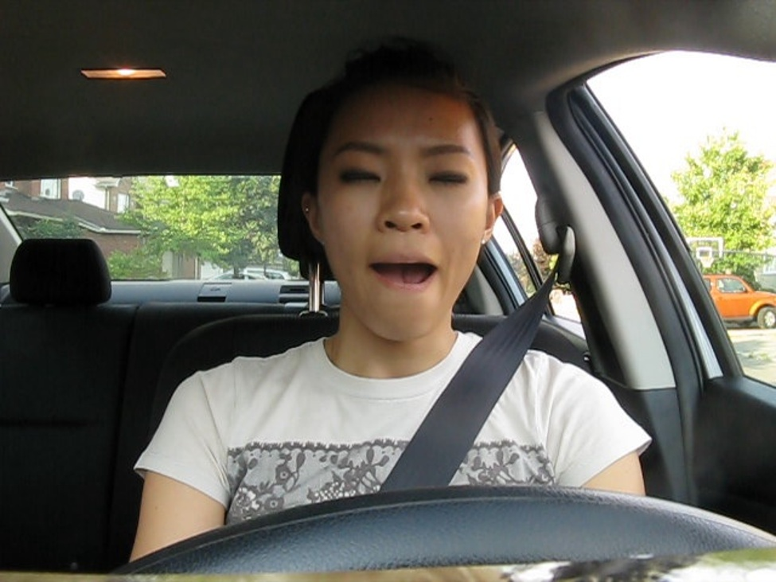
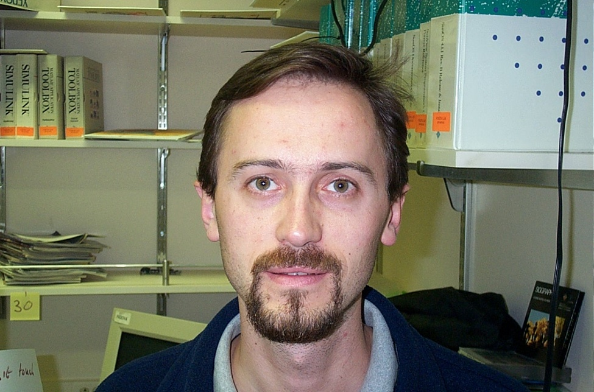

A vertically integrated pipeline detecting closed eyes before fatigue becomes fatal. Binary classification · 1,081 frames · ~12 FPS CPU.
Presented by
Tanathip Sungsorn M11453807 | Jiramet Thaworn M11453806
Padipat Aincham M11452803 | Risman Gustiana M11401853
Advised by Prof. Jr-Fong Dang
Unlike alcohol, drowsiness leaves no chemical trace — only slowly closing eyes. By the time a car drifts, it's already too late.
Steering jerk & lane departure fire after impairment. We need biometric signal before it.
Eye-closure is the earliest detectable precursor. Classify it in real-time and alert before microsleep.
// Simplified visualization · not real road footage
Labels are structured as normalized coordinate floating bounding maps. Center offsets (\(c_x, c_y\)) and spatial box boundaries (\(w, h\)) adapt consistently to scale transformations.


| Model | Params | mAP | CPU | Status |
|---|---|---|---|---|
| YOLOv8n ✓ | 3.2M | 92% | 84ms | DEPLOYED |
| YOLOv8s | 11.2M | 94% | 140ms | VIABLE |
| YOLOv8m | 25.9M | 95% | 280ms | TOO SLOW |
"Eye closure is the earliest detectable signal of drowsiness.
Catching it before microsleep is the difference
between a warning and a crash."